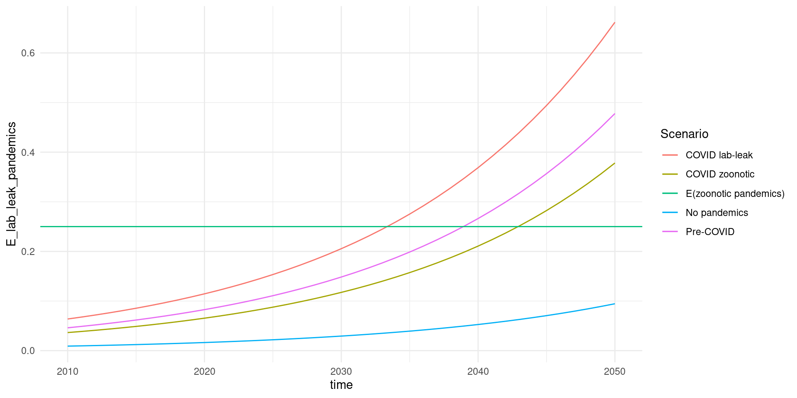

library(broom)
library(dplyr)
library(ggplot2)
library(purrr)
library(tidyr)
knitr::opts_chunk$set(fig.width = 10)To estimate the base rate, we need two quantities. First, the number of pandemics that lab accidents have caused. This can be easily found by looking at the historic record. Second, a measure of the amount of lab experiments that could cause such a pandemic; I refer to this as “risky research units”. I then extrapolate research units into the future to forecast a base rate for lab accidents causing pandemics.
No good data exists on risky research units directly. However, by applying a continuous time Gamma-Poisson model we only need a measure that is proportional to the number of experiments.
I consider three proxies for the number of risky research units being conducted. First, the number of BSL-4 labs (GlobalBioLabs 2023). I transform this into the net increase in labs per year to reduce autocorrelation. Second, the number of known lab accidents as reported by Manheim and Lewis 2022. Third, the number of virology papers published per year according to Web of Science (downloaded from their website). These appear to be growing at roughly the same rate, as seen by fitting either separate or joint Poisson regressions to the datasets.
incident_counts = readr::read_csv(here::here("data/lab-accidents.csv"), show_col_types = FALSE) |>
filter(!is.na(Year)) |> # Extra rows added when copying from web
mutate(
year = case_match(
Year,
"Late 1970s" ~ 1977,
.default = suppressWarnings(as.integer(stringr::str_sub(Year, end = 4)))
)
) |>
assertr::assert(assertr::not_na, year) |>
count(year) |>
complete(
year = 1975:2016,
fill = list(n = 0)
) |>
mutate(type = "Lab accidents")
lab_counts = readr::read_csv(here::here("data/bsl4.csv"), show_col_types = FALSE) |>
group_by(year = floor(year)) |>
summarise(labs = floor(min(labs))) |>
transmute(
year,
`New BSL4 labs` = labs - lag(labs),
) |>
pivot_longer(-year, names_to = "type", values_to = "n") |>
filter(!is.na(n))
web_of_science_counts = readr::read_tsv(here::here("data/web-of-science.tsv")) |>
rename(year = `Publication Years`, n = `Record Count`) |>
complete(
year = 1953:2022,
fill = list(n = 0)
) |>
select(year, n) |>
filter(year <= 2022) |>
mutate(type = "Web of Science articles")## Rows: 71 Columns: 3
## ── Column specification ──────────────────────────────────────────────────────────────────────────────────────────────────────────────────────
## Delimiter: "\t"
## dbl (3): Publication Years, Record Count, % of 277,012
##
## ℹ Use `spec()` to retrieve the full column specification for this data.
## ℹ Specify the column types or set `show_col_types = FALSE` to quiet this message.all_counts = bind_rows(
incident_counts,
lab_counts,
web_of_science_counts,
)
fit_counts = bind_rows(
incident_counts,
lab_counts,
web_of_science_counts |> filter(year <= 2010),
)
tbl_models = fit_counts |>
nest(data = !type) |>
mutate(
fit = map(data, ~glm(n ~ year, data = .x, family = "poisson")),
) |>
add_row(
type = "Joint",
fit = list(glm(n ~ year + type, data = fit_counts, family = "poisson")),
) |>
mutate(
fit_aug = map(fit, broom::augment, se_fit = TRUE),
fit_tidy = map(fit, broom::tidy, conf.int = TRUE),
) |>
rename(model_type = type)
final_growth_rate = tbl_models |>
unnest(fit_tidy) |>
filter(term == "year", model_type == "Joint") |>
assertr::verify(length(estimate) == 1) |>
pull(estimate)tbl_models |>
unnest(fit_aug) |>
mutate(
type = if_else(is.na(type), model_type, type),
.fitted.n = exp(.fitted),
ymin = qpois(0.025, exp(.fitted)),
ymax = qpois(0.975, exp(.fitted)),
) |>
# mutate(across(c(ymin, ymax, n, .fitted.n), ~.x / max(n)), .by = type) |>
ggplot(aes(year, .fitted.n)) +
geom_line(aes(color = model_type)) +
geom_ribbon(
aes(year, ymin = ymin, ymax = ymax, fill = model_type),
alpha = 0.3,
) +
geom_point(aes(year, n), data = all_counts) +
facet_wrap(~type, scales = "free_y") +
theme_minimal()Poisson regression from fitting to each time series either individually or jointly (jointly assumes the same growth rate).
tbl_models |>
filter(model_type == "Joint") |>
unnest(fit_aug) |>
mutate(
.fitted.n = exp(.fitted),
ymin = qpois(0.025, exp(.fitted)),
ymax = qpois(0.975, exp(.fitted)),
) |>
# mutate(across(c(ymin, ymax, n, .fitted.n), ~.x / max(n)), .by = type) |>
ggplot(aes(year, .fitted.n)) +
geom_line() +
geom_ribbon(
aes(year, ymin = ymin, ymax = ymax),
alpha = 0.3,
) +
geom_point(aes(year, n), data = all_counts) +
facet_wrap(~type, scales = "free_y") +
theme_minimal() +
labs(
x = "Year",
y = "Number of events"
)
ggsave(
here::here("outputs/poisson-regression.png"),
width = 15,
height = 10,
units = "cm",
dpi = 200
)fit_wos = glm(n ~ year, data = filter(web_of_science_counts, year <= 2010), family = "poisson")
augment(fit_wos, type.predict = "response", newdata = web_of_science_counts) |>
ggplot(aes(year, .fitted)) +
geom_line() +
geom_point(aes(year, n)) +
geom_ribbon(
aes(year, ymin = qpois(0.025, .fitted), ymax = qpois(0.975, .fitted)),
alpha = 0.3,
) +
theme_minimal() +
labs(
x = "Year",
y = "Number of papers published"
)tbl_models |>
unnest(fit_tidy) |>
filter(term == "year") |>
ggplot(aes(estimate, model_type, xmin = estimate - 1.96 * std.error, xmax = estimate + 1.96 * std.error)) +
geom_pointrange() +
theme_minimal() +
labs(
x = "Growth rate",
y = "Model"
)Growth rates from fitting to each time series either individually or jointly.
One lab risk pandemic has occurred to date: the 1977 Russian flu pandemic. COVID-19’s origin is debated, and I present either scenario.
The forecast will be based on three quantities. These can be calculated from the historic record, and the growth rate of risky research units \(r\) estimated above.
The estimate for the expected number of lab-leak pandemics per risky research unit (using a Gamma(1/3, 1/3) prior) is Gamma(a+1/3, 1). The expected number of lab-leak pandemics over the period of interest is \(u_p(a + 1/3)\). The probability of there being at least one pandemic is \(1 - 1 / (1 + u_p)^(a + 1/3)\).
This gives the following results, with r = 0.0584812
r = final_growth_rate
leak_risks = tribble(
~Scenario, ~a, ~tb,
"No pandemics", 0, 2023,
"Pre-COVID", 1, 2019,
"COVID zoonotic", 1, 2023,
"COVID lab-leak", 2, 2023,
) |>
mutate(
t0 = 2024,
d = 10,
up = exp(r * (t0 - tb)) * (expm1(r * d)),
E_lab_leaks = up * (a + 1/3),
p_gte1_lab_leaks = 1 - 1 / (1 + up) ^ (a + 1/3),
)
leak_risks## # A tibble: 4 × 8
## Scenario a tb t0 d up E_lab_leaks p_gte1_lab_leaks
## <chr> <dbl> <dbl> <dbl> <dbl> <dbl> <dbl> <dbl>
## 1 No pandemics 0 2023 2024 10 0.843 0.281 0.184
## 2 Pre-COVID 1 2019 2024 10 1.06 1.42 0.620
## 3 COVID zoonotic 1 2023 2024 10 0.843 1.12 0.557
## 4 COVID lab-leak 2 2023 2024 10 0.843 1.97 0.760Full probability distributions
prob_dist = leak_risks |>
cross_join(tibble(n = 0:10)) |>
mutate(p = dnbinom(n, a + 1/3, 1 / (up + 1))) |>
pivot_wider(
names_from = Scenario,
id_cols = n,
values_from = p,
)
prob_dist## # A tibble: 11 × 5
## n `No pandemics` `Pre-COVID` `COVID zoonotic` `COVID lab-leak`
## <int> <dbl> <dbl> <dbl> <dbl>
## 1 0 0.816 0.380 0.443 0.240
## 2 1 0.124 0.262 0.270 0.256
## 3 2 0.0379 0.157 0.144 0.195
## 4 3 0.0135 0.0901 0.0732 0.129
## 5 4 0.00514 0.0504 0.0362 0.0787
## 6 5 0.00204 0.0277 0.0177 0.0456
## 7 6 0.000827 0.0151 0.00853 0.0255
## 8 7 0.000342 0.00814 0.00409 0.0139
## 9 8 0.000143 0.00437 0.00195 0.00740
## 10 9 0.0000607 0.00234 0.000923 0.00388
## 11 10 0.0000259 0.00125 0.000436 0.00201Cumulative distribution
prob_dist |>
mutate(across(-n, cumsum))## # A tibble: 11 × 5
## n `No pandemics` `Pre-COVID` `COVID zoonotic` `COVID lab-leak`
## <int> <dbl> <dbl> <dbl> <dbl>
## 1 0 0.816 0.380 0.443 0.240
## 2 1 0.940 0.642 0.713 0.497
## 3 2 0.978 0.799 0.857 0.692
## 4 3 0.991 0.889 0.930 0.821
## 5 4 0.997 0.940 0.966 0.900
## 6 5 0.999 0.967 0.984 0.945
## 7 6 0.999 0.982 0.992 0.971
## 8 7 1.00 0.991 0.996 0.985
## 9 8 1.00 0.995 0.998 0.992
## 10 9 1.00 0.997 0.999 0.996
## 11 10 1.00 0.999 1.00 0.998For comparison, Marani et al. (2021) suggests 2.5 zoonotic pandemics per decade, although this rate may have decreased since World War II.
Below I show how the rate is changing over time due to the change in risky research units.
leak_risks |>
cross_join(tibble(time = 2010:2050)) |>
mutate(
E_lab_leak_pandemics = r * exp(r * (time - tb)) * (a + 1/3),
) |>
ggplot(aes(time, E_lab_leak_pandemics, color = Scenario)) +
geom_line() +
geom_hline(aes(colour = "E(zoonotic pandemics)", yintercept = 0.25)) +
theme_minimal()